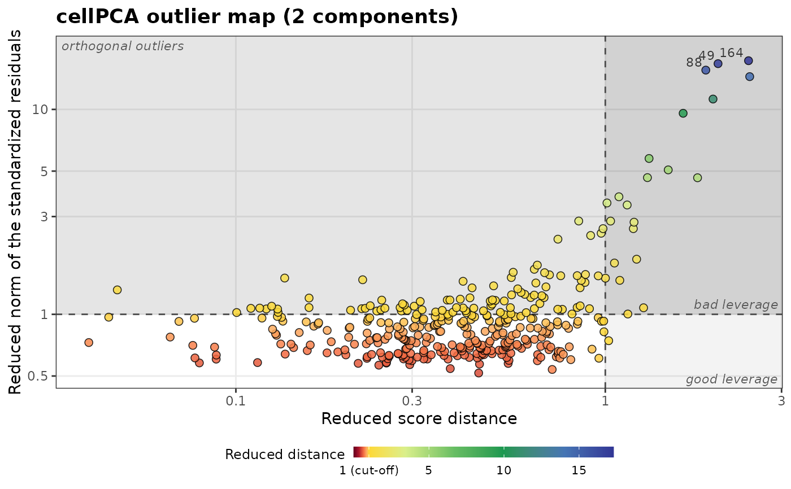
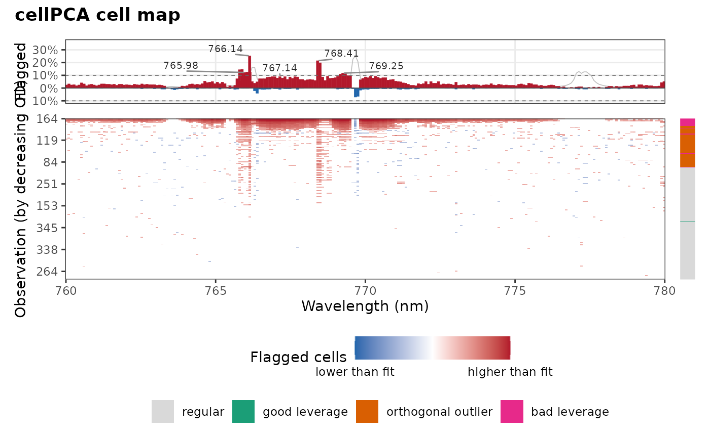

Robust PCA that handles outlying observations (casewise outliers),
outlying cells (cellwise outliers) and missing values by minimizing a
single objective function: the cellPCA method of Centofanti, Hubert and
Rousseeuw. Each cell and each observation gets a weight between 0 and 1
that reflects its outlyingness, and regular cells and observations are
not downweighted, which makes cellPCA more efficient than macropca().
The iterations are computed in C++. The results have the same form as
those of robpca(), so that predict(),
plot_outlier_map() and plot_cell_map() work the same way.
Usage
cellpca(
x,
k = NULL,
alpha = 0.5,
kmax = 10,
var_explained = 0.8,
scale = FALSE,
ndir = 250,
maxiter = 1000,
tol = 1e-06,
max_col_frac = 0.5,
od_cutoff = c("simulated", "chisq")
)Arguments
- x
A numeric matrix or data frame, with one observation per row. Missing values are allowed.
- k
The number of principal components. If
NULL(default), it is chosen fromvar_explainedandkmax.- alpha
The robustness parameter, between 0.5 and 1: the fraction of observations used in the fit. Default is 0.5.
- kmax
The maximum number of components. Default is 10.
- var_explained
The fraction of variance used to choose
kwhen it is not given. Default is 0.8.- scale
A logical: scale the variables by their robust scale (
FALSE, default: they are only centered, so that intense emission lines are not outweighed by noise and continuum channels).- ndir
The number of random directions of the outlyingness, or
"all". Default is 250.- maxiter, tol
The maximum number of iterations, and the tolerance on the relative change of the fit. Defaults are 1000 and 1e-6.
- max_col_frac
The largest fraction of cells of a variable that can get a zero weight. Default is 0.5.
- od_cutoff
How to compute the cut-off of
od:"simulated"(default) or"chisq". See Details.
Value
An object of class specproc_cellpca (inheriting from
specproc_robpca), with the components described in robpca() and
macropca(), and:
cell_weights: the cellwise weights (0 for missing cells).case_weights: the casewise weights.deviation: the standardized casewise total deviations.fitted: the fitted values \(\hat{X}\).imputed: the data in which the outlying cells are moved toward the fit in proportion to their weights, and the missing cells are replaced by the fit, so that the projection of each observation on the subspace is its fitted value.sigma1,sigma2: the scales of the cellwise residuals and of the casewise total deviations;resid_scale: the scales of the final residuals.objective: the objective at each iteration;iterationsandconverged.
Details
cellPCA approximates the data by a fit \(\hat{X} = 1_n \mu^T + U V^T\)
of rank k that minimizes
$$\hat\sigma_2^2 \frac{1}{n} \sum_{i=1}^n m_i \rho_2\left(\frac{t_i}{\hat\sigma_2}\right),
\quad t_i = \sqrt{\frac{1}{m_i} \sum_{j=1}^p m_{ij} \hat\sigma_{1,j}^2
\rho_1\left(\frac{x_{ij} - \hat{x}_{ij}}{\hat\sigma_{1,j}}\right)}$$
where \(m_{ij}\) is 0 for a missing cell and 1 otherwise and \(m_i\)
is the number of observed cells of observation \(i\). The bounded
function \(\rho_1\) limits the effect of the outlying cells (the
residuals of variable \(j\) divided by their scale
\(\hat\sigma_{1,j}\)), and \(\rho_2\) that of the outlying
observations (the casewise total deviations \(t_i\) divided by their
scale \(\hat\sigma_2\)). Both are hyperbolic tangent functions (Hampel
et al., 1981): \(\rho_1\) with \(b = 1.5\) and \(c = 4\), and
\(\rho_2\) with \(b\) and \(c\) the 0.70 and 0.99 quantiles of the
standardized total deviations of simulated Gaussian residuals. Their
weights \(\psi(z)/z\) are 1 in the central region and 0 beyond
\(c\).
The algorithm follows the reference code of the authors:
Initial fit. A
macropca()fit (withalpha,kmax,var_explained,scaleandndir), which also chooseskwhen it isNULL, with its scores computed from the data whose flagged and missing cells are imputed by the fit.Scales. \(\hat\sigma_{1,j}\) is the M-scale of the residuals of variable \(j\), and \(\hat\sigma_2\) that of the total deviations (with \(\rho_{1.5,4}\): 50% breakdown, consistent at the normal distribution). They are kept fixed.
Iteratively reweighted least squares. The loadings (one variable at a time, with the casewise and cellwise weights) and the scores (one observation at a time, with the cellwise weights) are updated by weighted least squares, the loadings are orthonormalized, the center is updated, and so are the weights, until the fit \(U V^T\) changes by less than
tol(relative), at mostmaxitertimes. Each iteration decreases the objective. If more thanmax_col_fracof the cells of a variable get a zero weight, the previous iteration is kept.Principal directions. The center and the eigenvectors within the subspace are estimated by the deterministic MCD of the scores of the observations with a non-zero casewise weight (the exact MCD when
k = 1), and the sign of each loading vector is set so that its largest element is positive.
The residuals of each variable are then standardized by their M-scale,
and the cells beyond \(\sqrt{\chi^2_{1, 0.99}}\) are flagged. As in the
enhanced outlier map of the paper, od is the norm of the standardized
residuals of each observation, and sd the score distance of its
projection on the subspace (of its robust scores when it has missing
cells). The cut-off of sd is \(\sqrt{\chi^2_{k, 0.99}}\). That of
od is, by default (od_cutoff = "simulated"), the 0.99 quantile of the
od of a cellPCA fit to clean data simulated from the fit, as in the
reference code (this needs a second fit); "chisq" uses
\(\sqrt{\chi^2_{p, 0.99}}\) instead.
New observations, with missing or outlying cells, are projected by the robust regression of their observed cells on the loadings, also in C++.
References
Centofanti, F., Hubert, M., Rousseeuw, P.J. (2026). Robust principal components by casewise and cellwise weighting. Technometrics. doi:10.1080/00401706.2026.2643216
Hampel, F.R., Rousseeuw, P.J., Ronchetti, E. (1981). The change-of- variance curve and optimal redescending M-estimators. Journal of the American Statistical Association, 76(375):643-648.
Hubert, M., Rousseeuw, P.J., Van den Bossche, W. (2019). MacroPCA: an all-in-one PCA method allowing for missing values as well as cellwise and rowwise outliers. Technometrics, 61(4):459-473.
Examples
data(forageLIBS)
# the K I resonance lines
wl <- suppressWarnings(as.numeric(names(forageLIBS)))
spectra <- forageLIBS[which(wl > 760 & wl < 780)]
set.seed(1)
fit <- cellpca(spectra, k = 2, od_cutoff = "chisq")
fit
#> Robust PCA by casewise and cellwise weighting (cellPCA)
#>
#> Observations: 368 (h = 185)
#> Variables: 245
#> Components: 2
#> Eigenvalues: 322134967 14963319
#> Flagged cells: 4052
#> Downweighted observations: 140
#> IRLS iterations: 98
#>
#> Outlier types:
#>
#> regular good leverage orthogonal outlier bad leverage
#> 255 1 90 22
plot_outlier_map(fit, shade = TRUE, relative = TRUE, log = TRUE, colour_by = "distance")

plot_cell_map(fit, order = "od")
